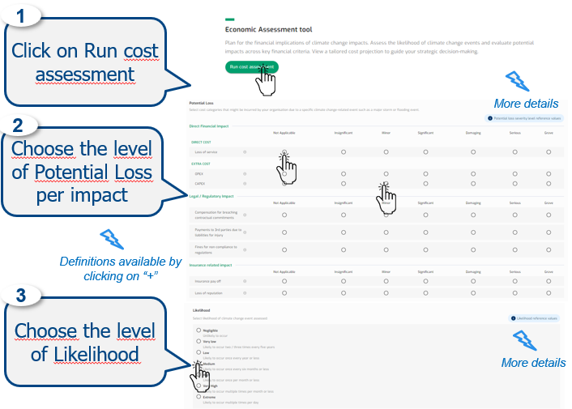
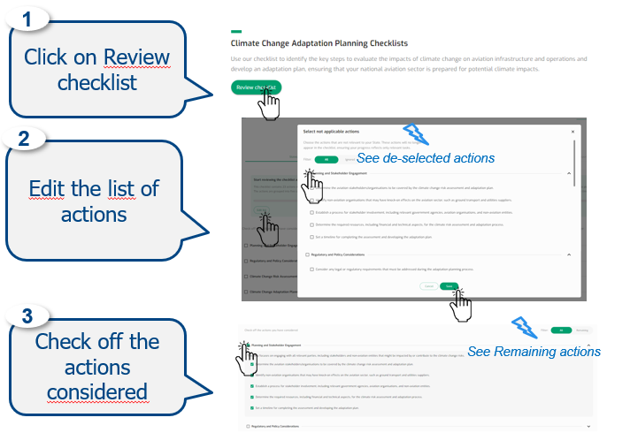
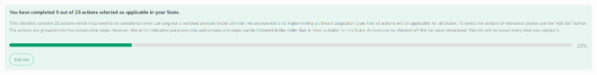

7 ClimAdapt
7.1 Intro

ClimAdapt is your portal to information on climate change impacts and adaptation measures for your organisation.
Find out how the climate will change around the European region.
Initiate a location and organisation-based pre-screening assessment to support the initiation of a full climate risk assessment.
Run a financial assessment and evaluate the potential costs of climate impacts.
Use the checklist to plan a climate change risk assessment and adaptation strategy.
Explore key climate impacts and adaptation measures by stakeholder,climate effect, or risk category.
Get guidance on assessing climate change risks and implementing effective adaptation strategies from various sources.
7.2 Functionalities
- Climate Change effects
- View Climate change effects per Climate zone or State
- High level Pre-Screening tool
- Run a climate change risk pre-screening assessment
- View the pre-screening assessment report summary
- Economic Assessment tool
- Plan for the financial implications of climate change
- View the economic assessment results
- Repository of Impacts and Adaptation Measures
- Search for potential climate impacts and targeted measures to reduce vulnerabilities
- Adaptation Planning Checklists
- Check the key steps for climate risk assessment and adaptation action
- Repository of Information and Guidance
- Get guidance on climate change risks and adaptation measures from various sources
- About the Data
- View ClimAdapt data sources
7.3 View Climate change effects per Climate zone or State

Default
No Geographical subdivision selected
Climate change effects is empty
Map displayed with all IPCC zone with colour codes
Output
Selected IPCC geographical subdivision highlighted with related Climate change effects.

Data
Scientific sources the IPCC assessment reports.
7.4 Run a climate change risk pre-screening assessment

Default
Default Location type: State
No profile selected
Output
Selected State or IPCC geographical subdivision, and selected profile, impacts the questions presented for:
Temperature;
Storms;
Sea level rise;
Precipitation.

Data
Questionnaire and methodology are designed by EUROCONTROL experts.
7.5 View the pre-screening assessment report summary

Default
Results from the High-level pre-screening assessment
Output
The results of the high-level pre-screening assessment are presented:
Screening Assessment Report;
Answers to climate change effects and impacts questions;
Recommendation for next steps.
Results of the last assessment can be downloaded.

7.6 Plan for the financial implications of climate change

Default
No answers selected
Output
Selected levels impact the results.

Data
These reference values were developed based on a range of industry and academic sources of information.
For more details you can see the Repository of Information and Guidance.
7.7 View the economic assessment results

Default
Results from the Economic assessment
Output
The results of the Economic assessment are presented:
PHOCCE score,
Severity costs,
Potential loss details,
Next steps,
Disclaimer,
Sources.
Results of the last assessment can be displayed.
Recalculation is possible at the end of the results.
7.8 Search for potential climate impacts and targeted measures to reduce vulnerabilities

Default
All filters (Stakeholder, Climate Effect and Risk Category) preselected.
Output
Climate impacts results with vulnerabilities and adaptations measures.

Data
The information in this repository is based on:
ICAO Key Climate Change Vulnerabilities for Aviation Organisations;
ICAO Menu of Adaptation Options;
EUROCONTROL Climate Change Risks for European Aviation 2021;
EUROCONTROL Adapting Aviation to a Changing Climate 2018.
7.9 Check the key steps for climate risk assessment and adaptation action

Default
No actions preselected
Output
Progress bar updated from the actions selected.

Data
ICAO guidance : Climate Change: Climate Risk Assessment, Adaptation and Resilience
7.10 Get guidance on climate change risks and adaptation measures from various sources

Default
No actions preselected
7.11 View ClimAdapt data sources
Default
Links
Output
The data sources links open in a new window.

7.12 ClimAdapt journey
ClimAdapt step by step
Climate Change effects: Select your IPPC region and view climate change effects
High Level Pre-screening tool: Select your State and organisation type and answer to the assessment questions to obtain your recommendation
Economic Assessment Tool: Select your potential loss severity levels and the likelihood values and obtain your results
Repository of Impacts and Measures & Adaptation Checklist: Search for the vulnerabilities and adaptation measures for your organisation type and identify the key steps to evaluate the impacts of climate change
About the Data: Check the additional data sources
The advantages of your journey
Understand the climate change effects projected in your region.
Assess your understanding of climate change effects and impacts for your organisation. Receive a recommendation to support a full climate change risk assessment.
Plan for the financial implications of climate change impacts.
Manage the risks of climate change and identify the key steps to evaluate the impacts.